통신선로기능사 (2003-03-30 기출문제)
1과목: 전기전자개론
1. 다음 그림에서 전체전압 V[V]는 얼마인가?
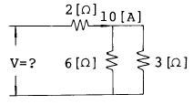
- 60
- 40
- 20
- 10
(정답률: 47%)

2. R = 5[Ω], L = 0.2[mH]의 코일과 C = 200[㎊]의 병렬 공진 회로에서 공진 임피던스는 얼마인가?
- 160[Ω]
- 10[Ω]
- 200[㏀]
- 160[㏀]
(정답률: 46%)
3. R = 4[Ω], XL = 8[Ω], Xc = 4[Ω]인 RLC 직렬회로에서 전압과 전류의 위상관계는?
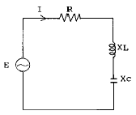
- 전압이 전류보다 위상이
 앞선다.
앞선다. - 전류가 전압보다 위상이
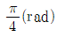
앞선다. - 전압이 전류보다 위상이
 앞선다.
앞선다. - 전류가 전압보다 위상이
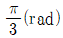
앞선다.
(정답률: 44%)
4. L1 = 4[mH], L2=9[mH]일때 상호 인덕턴스 M는 얼마인가? (단, 1차코일과 2차코일의 자속에 의한 결합계수 k = 1임)
- 5[mH]
- 6[mH]
- 13[mH]
- 15[mH]
(정답률: 24%)
5. 금속의 열전자 방출에 대한 설명이 잘못된 것은?
- 전자방출량은 금속의 종류에 따라 달라진다.
- 일함수가 큰재료는 저온에서 전자방출이 크다.
- 전장의 영향에 따라 전자방출량이 달라진다.
- 금속의 표면 상태에 따라 전자방출량이 달라진다.
(정답률: 90%)
6. 신호파 fs와 반송파 fc가 링변조 회로에 공급될 때 링변조 회로의 출력은?
- fc + fs
- fc - fs
- fc ± fs
- fs
(정답률: 75%)
7. 그림과 같은 회로는 어떤 GATE에 해당되는가?
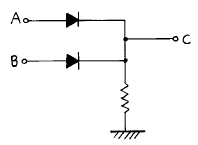
- AND GATE
- OR GATE
- NOT GATE
- NOR GATE
(정답률: 50%)
8. 변압기의 원리는 어느 현상(법칙)을 이용한 것인가?
- 오옴의 법칙
- 전자 유도 원리
- 공진 현상
- 키르히 호프의 법칙
(정답률: 70%)
9. 트랜지스터 증폭회로 설명중 틀리는 것은?
- 베이스 접지회로의 입력은 에미터가 된다.
- 콜렉터 접지회로의 입력은 베이스가 된다.
- 베이스 접지회로의 입력은 콜렉터가 된다.
- 에미터 접지회로의 입력은 베이스가 된다.
(정답률: 50%)
10. 1000[㎑]의 반송파를 1 [㎑]로 진폭변조 했을경우 점유 주파수대는?
- 999 [㎑] ∼ 1000[㎑]
- 1000 [㎑] ∼ 1001[㎑]
- 999 [㎑] ∼ 1001[㎑]
- 998 [㎑] ∼ 1000[㎑]
(정답률: 알수없음)
11. RC 이상 발진회로에서 "이상"의 의미는?
- 위상이 2개라는 의미
- 발진소자의 비정상 현상 의미
- 이상적인(ideal) 경우 발진기 의미
- 위상이 천이(shift) 한다는 의미
(정답률: 48%)
12. 정전용량이 20[㎌]인 커패시터의 극판 간격을 1/4로 줄였을 때 정전용량은 몇 [㎌]인가?
- 20
- 40
- 60
- 80
(정답률: 44%)
13. 다음 회로의 명칭은?
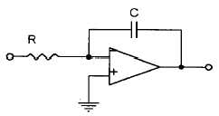
- 가산기
- 적분기
- 전압 플로워
- 비반전 증폭기
(정답률: 71%)
14. 어떤 코일에 4[A]의 전류가 흐를 때 600[AT]의 기자력을 갖는 코일의 감긴 횟수는?
- 150회
- 200회
- 400회
- 600회
(정답률: 73%)
15. 다음과 같은 발진회로에서 Z1, Z2, Z3의 발진 조건으로 옳은 것은?
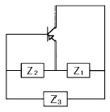
- 유도성, 유도성, 유도성
- 용량성, 유도성, 유도성
- 유도성, 용량성, 용량성
- 유도성, 유도성, 용량성
(정답률: 58%)
2과목: 전자계산기일반
16. 컴퓨터가 가진 기능이 아닌 것은?
- 입출력 기능
- 추리 기능
- 연산 기능
- 기억 기능
(정답률: 93%)
17. 주기억장치의 구성소자로 사용된 자기 코어(magnetic core)를 설명한 것으로 옳지 않은 것은?
- 자기 코어는 페로 마그네틱(Ferro Magnetic) 물질로 만들어진다.
- 비교적 접근 시간이 빠르고 신뢰성이 높다.
- 한개의 자기 코어는 숫자 또는 문자 1자를 기억한다.
- 기억원리는 자기 코어의 자화 현상을 이용한다.
(정답률: 66%)
18. 2진수 01000 을 1의 보수 (one's complement) 방식으로 나타낸 것은?
- 10110
- 01001
- 11000
- 10111
(정답률: 77%)
19. 전자 계산기 논리 회로중 항상 반대의 결과를 나타내는 회로는?
- AND 회로
- FLIP - FLOP 회로
- OR 회로
- NOT 회로
(정답률: 73%)
20. 컴퓨터 시스템의 성능을 가능한 최대의 효율을 발휘하도록 컴퓨터의 동작을 제어하려는 목적으로 실행되는 시스템 프로그램중의 하나는?
- 인터럽트
- 서브 루틴
- 마스터 화일
- 오퍼레이팅 시스템
(정답률: 알수없음)
21. 플로우 차트(FLOW CHART)의 기호중 판단을 나타내는 기호는?
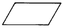
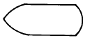
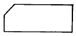
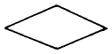
(정답률: 67%)
22. 다음 표에 해당하는 게이트는?
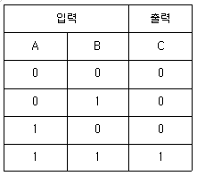
- AND
- OR
- NOT
- NAND
(정답률: 59%)
23. 전자계산기 시스템이 직접 처리 할 수 없는 언어로 작성된 프로그램은 전자계산기가 직접 처리 할 수 있는 프로그램으로 변환해야 한다. 이 변환된 프로그램을 무엇이라 하는가?
- 원시(Source)프로그램
- 응용(Application)프로그램
- 목적(object)프로그램
- 제어(Control)프로그램
(정답률: 32%)
24. Analog Computer의 주요 구성회로는?
- 증폭회로
- 논리회로
- 플립플롭회로
- 연산회로
(정답률: 50%)
25. 다음중 컴퓨터의 중앙처리장치(CPU)에 관한 설명으로 적합하지 않은 것은?
- 작업수행에 대한 데이터를 직접 입·출력 및 전송한다.
- 제어,연산,주기억장치로 이루어져 있다.
- 명령어들을 해석하고 데이터들을 기억장치에 이동시킨다.
- 컴퓨터의 전체를 통제,감독한다.
(정답률: 54%)
26. 전화 케이블의 심선절연에 대한 누설량을 경감시키기 위한 조건에 해당되지 않는 것은?
- 도체 간격을 넓힐 것
- 절연저항을 높일 것
- 와류손을 크게 할것
- 절연물을 건조시킬것
(정답률: 58%)
27. 직접누화 및 간접누화에 관계없이 피유도 회선에 나타나는 누화중 유도회선의 송화측에 나타나는 피유도 회선의 누화는?
- 근단누화
- 원단누화
- 정전누화
- 전자누화
(정답률: 40%)
28. 통신케이블 심선의 절연재료로서 적합하지 않는 것은?
- 절연내력이 클 것
- 유전율이 클 것
- 유전체손이 적을 것
- 내수성이 있고 흡습성이 없을 것
(정답률: 70%)
29. 통신선로용 인공(manhole)으로서 사용되지 않는 것은?
- 직선형(S)
- 분기 L형(L)
- 분기+형(+)
- 분기 8각형(8)
(정답률: 40%)
30. 다음 케이블 중 가장 높은 주파수를 전송시킬 수 있는 케이블은?
- FS시내케이블
- 광케이블
- PEF절연케이블
- 동축케이블
(정답률: 75%)
3과목: 통신선로일반
31. 다음 중 가공 케이블 가설시 필요하지 않은 장비는?
- 주름호스
- 케이블 작기
- 케이블 도르래
- 되돌림쇠
(정답률: 57%)
32. 맨홀 및 핸드홀 설치시 고려사항 중 잘못된 것은?
- 인가 등의 출입구 앞은 피한다.
- 지상 및 지하에 있는 타 기설물에 영향이 적은 장소를 설정한다.
- 굴착에 따른 도로 포장의 영향에 관계없이 시공한다.
- 도로교통에 의한 지장이 적은 장소를 선정한다.
(정답률: 94%)
33. 가입전화 보안기의 설치장소 설정 중 잘못된 것은?
- 사람의 손이 닿기 쉬운 장소
- 전력이나 전등 및 전동기가 없는 장소
- 옥내 미관을 해치지 않는 장소
- 굴뚝 및 난방장치가 없는 장소
(정답률: 71%)
34. 시내 전화선로에 있어서 가공 케이블과 옥외 전화선과의 접속개소는 어떻게 처리하는가?
- 그대로 접속하면 충분하다.
- 배선함을 사용해서 접속한다.
- 단자함을 사용해서 접속한다.
- 배류코일을 사용해서 접속한다.
(정답률: 50%)
35. 특성 임피던스가 동일한 두회선 사이의 누화전류를 측정하였던 바 통화전류 10[㎃]에 대해 누화전류는 0.1[㎃]이었다. 이 두회선 사이의 누화는 몇 [dB]가 되는가?
- 60 [dB]
- 40 [dB]
- 20 [dB]
- 10 [dB
(정답률: 57%)
36. 열수축관의 규격이 다음과 같을 때, 숫자 50 은 무엇을 나타내는가?
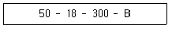
- 접속부의 길이
- 열수축관의 길이
- 수축후 내경
- 수축전 내경
(정답률: 62%)
37. 시내 케이블의 내압시험의 주된 목적은?
- 케이블 외피의 방습성 측정
- 케이블 외피의 강도 측정
- 케이블 심선의 도전율 측정
- 케이블 외피의 도전율 측정
(정답률: 32%)
38. 통신선로에서 최소 감쇄 무왜곡 조건에 해당되는 것은?
- RC + LG
- RC = LG
- LC = RG
- LR = CG
(정답률: 69%)
39. 통신구를 축조할때 개착식 공법은 어떤 방식, 어느 지역에 사용하는가?
- 지중을 굴착하며 도로사정이 좋은 지역
- 지중을 굴착하며 도로사정이 나쁜 지역
- 도로표면을 굴착하며 도로사정이 좋은 지역
- 도로표면을 굴착하며 도로사정이 나쁜 지역
(정답률: 47%)
40. 디지털 전송로 집선장치에서 음성주파수가 표본화 과정을 거쳐 나오는 펄스는?
- 펄스진폭변조(PAM)파
- 펄스부호변조(PCM)파
- 펄스위치변조(PPM)파
- 펄스주파수변조(PFM)파
(정답률: 알수없음)
41. F/S 케이블의 절연재료 및 구조적인 특징으로서 맞는 것은?
- 종래의 절연체보다 발포도를 크게한 PEF이다.
- PEF에 아크릴(Acryl)로 코팅(Coating)한 것이다.
- PEF에 다시 PVC로 코팅(Coating)한 것이다.
- PEF에 다시 PE로 코팅(Coating)한 것이다.
(정답률: 34%)
42. 케이블 심선의 절연방법이 케이블에 미치는 영향과 관계 없는 것은?
- 케이블의 전기적특성
- 케이블 심선의 접속방법
- 케이블의 외피구조
- 케이블 심선의 단위구성
(정답률: 30%)
43. 맨홀내 모서리에 시내전화 케이블을 포설할 경우 그 허용곡률 반경은 케이블 외경의 최소 몇배 이상으로 하여야 하는가?
- 5배
- 6배
- 7배
- 8배
(정답률: 69%)
44. 케이블의 접속점에서 조립식 접속관의 사용시 용도적으로 맞는 것은?
- 지절연 케이블은 사용할 수 없다.
- PE 및 CCP 케이블의 전용 접속관이다.
- 젤리(Jelly) 케이블에서 사용되는 접속관이다.
- 일반적인 모든 케이블에서 사용되는 접속관이다.
(정답률: 30%)
45. 시외선로의 선조를 교차하는 목적은?
- 선로의 임피던스를 정합시키기 위하여
- 선조의 간격과 길이를 조정하기 위하여
- 통화전류를 증폭시키기 위하여
- 회선 상호간의 누화를 감소시키기 위하여
(정답률: 알수없음)
4과목: 선로설비기준
46. 정보통신부장관이 전기통신 기본계획을 수립시 미리 관계 행정기관장과 협의하여야 하는 사항은?
- 전기통신의 이용효율화에 관한 사항
- 전기통신의 질서유지에 관한 사항
- 전기통신기술의 진흥에 관한 사항
- 전기통신사업에 관한 사항
(정답률: 48%)
47. 기간통신사업을 경영하고자 할 때의 절차는?
- 정보통신부장관의 지정을 받아야 한다.
- 정보통신부장관의 허가를 받아야 한다.
- 한국통신사장의 허가를 받아야 한다.
- 한국정보통신공사협회장에게 신고만 하면 된다.
(정답률: 70%)
48. 정보통신공사업을 영위하고자 하는 자는 어떤 절차를 거쳐야 하는가?
- 한국정보통신공사업협회에 가입하여야 한다.
- 한국통신사장의 허가를 받아야 한다.
- 정보통신부장관에게 등록하여야 한다.
- 통신위원회의 인증을 받아야 한다.
(정답률: 50%)
49. 정보통신공사업법령에서 구분하는 정보통신공사에 해당하지 않는 것은?
- 정보설비공사
- 방송설비공사
- 전력설비공사
- 통신설비공사
(정답률: 알수없음)
50. 정보통신공사업의 종류는?
- 무선통신공사업과 유선통신공사업으로 구분한다.
- 일반공사업과 별종공사업으로 분류한다.
- 기계공사업과 선로공사업으로 분류한다.
- 정보통신공사업 단일업종으로 되어 있다.
(정답률: 34%)
51. 전기통신설비의 설치 또는 보전의 공사를 위하여 사유의 토지를 사용한 경우 그 소유자가 입은 손실에 대한 조치 중 맞지 않는 것은?
- 원상 회복하거나 손실보상을 하여야 한다.
- 손실을 입은 자와 우선 협의하여야 한다.
- 일시사용인 경우에도 정당한 보상을 하여야 한다.
- 공공이익을 위한 경우 무상대여로 처리할 수 있다.
(정답률: 60%)
52. 전기통신기자재의 형식 승인서의 교부자는?
- 관할체신청장
- 전파연구소장
- 한국통신사장
- 형식승인위원회위원장
(정답률: 40%)
53. 정보통신공사의 발주자로부터 공사를 도급받은 공사업자를 무엇이라고 하는가?
- 도급
- 하도급
- 수급인
- 하수급인
(정답률: 77%)
54. 기술기준에서 관로를 차도에 시설시 지면과 관로 상단까지의 거리를 얼마로 정하고 있는가?
- 60[㎝] 이상
- 70[㎝] 이상
- 90[㎝] 이상
- 100[㎝] 이상
(정답률: 64%)
55. 가공통신선의 지지물과 가공 강전류 전선과의 이격거리는 몇[㎝] 이상인가? (단. 저압일 경우)
- 10
- 30
- 60
- 90
(정답률: 38%)
56. 선로설비에 있어 지하관로의 공수를 산출하는 공식이 맞는 것은?
- 계획케이블조수 × 환경배율 + 예비관공수 + 직매케이블조수
- 계획케이블조수 + 예비관공수 × 환경배율 + 직매케이블조수
- 계획케이블조수 + (예비관공수 + 직매케이블조수) ×환경배율
- 계획케이블조수 + 예비관공수 + 직매케이블조수 ×환경배율
(정답률: 37%)
57. 전기통신 기본법의 목적에 해당하지 않은 것은?
- 전기통신의 기본적인 사항을 정한다.
- 전기통신의 효율적 관리를 기한다.
- 공공복리의 증진을 기한다.
- 전기통신 사업의 운영을 적정하게 한다.
(정답률: 알수없음)
58. 전기통신의 원활한 발전과 정보사회의 촉진을 위하여 전기통신기본계획을 수립해야 하는 사람은?
- 대통령
- 전화국장
- 정보통신부장관
- 국무총리
(정답률: 92%)
59. 전기통신 역무에 제공되는 선로등을 설치하기 위하여 사용할 수 있는 대상물이 아닌 것은?
- 다른 사람의 토지
- 토지에 정착한 건물
- 수면
- 철도구내 토지
(정답률: 24%)
60. 구내간선케이블 및 건물간선케이블을 종단하여 상호 연결하는 통신용 분배함을 무엇이라 하는가?
- 동단자함
- 층단자함
- 세대단자함
- 국선단자함
(정답률: 70%)